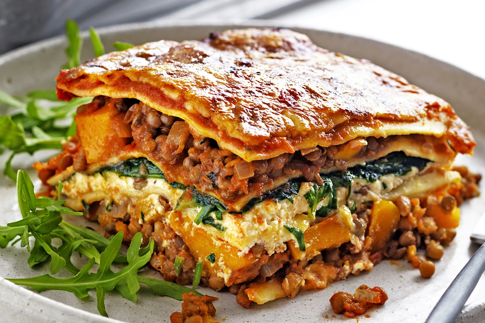

Beat the Self Isolation blues by whipping up some of these tasty recipes with food stocked in the cupboards

Ingredients:
1 tbsp olive oil
1 onion, chopped
1 carrot, chopped
1 garlic clove, crushed
1 celery stick, chopped
2 x 400g cans lentils, drained, rinsed
1 tbsp cornflour
400g can chopped tomato
1 tsp mushroom ketchup
1 tsp vegetable stock powder
1 tsp chopped oregano (or 1 tsp dried)
2 tbsp unsweetened soya milk
2 cauliflower heads, broken into florets
pinch of freshly grated nutmeg
9 dried egg-free lasagne sheets
Method
Heat the oil in a pan, add the onion, carrot and celery, and gently cook for 10-15 mins until soft. Add the garlic, cook for a few mins, then stir in the lentils and cornflour.
Add the tomatoes plus a canful of water, the mushroom ketchup, oregano, stock powder and some seasoning. Simmer for 15 mins, stirring occasionally.
Meanwhile, cook the cauliflower in a pan of boiling water for 10 mins or until tender. Drain, then purée with the soya milk using a hand blender or food processor. Season well and add the nutmeg.
Heat oven to 180C/160C fan/gas 4. Spread a third of the lentil mixture over the base of a ceramic baking dish, about 20 x 30cm. Cover with a single layer of lasagne, snapping the sheets to fit. Add another
third of the lentil mixture, then spread a third of the cauliflower purée on top, followed by a layer of pasta. Top with the last third of lentils and lasagna, followed by the remaining purée.
Cover loosely with foil and bake for 35-45 mins, removing the foil for the final 10 mins of cooking.